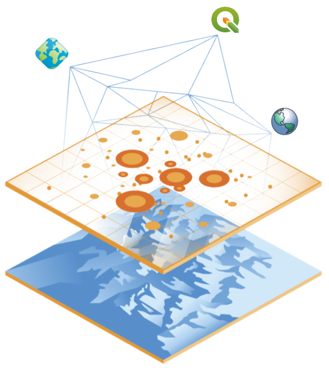

GIS from A to Z
Napkin offers a plethora of product lines, with the ability to combine components from each product line. We have highlighted some of the software components in our two main product lines. Read more below.


Data-driven GIS web-tools.
Our GIS web-tools enable you to create gorgeous animations and stunning visualizations with little to no effort. Here are the tools we offer:

Open-source GIS platform.
Our open-source GIS platform is built on the best technologies the community has to offer. Here are the components we use:
- Database
- PostGIS, leading open-source geospacial database
- Analysis
- QGIS desktop, the most widely used open-source GIS tool on the market
- Web View
- QGIS server, seamlessly integrated with QGIS desktop together with gisquick-based web view
- Field app
- QField, a fully featured field app with complete integration with the QGIS suite